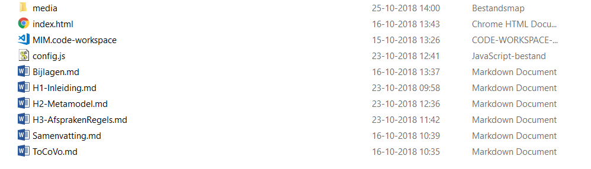
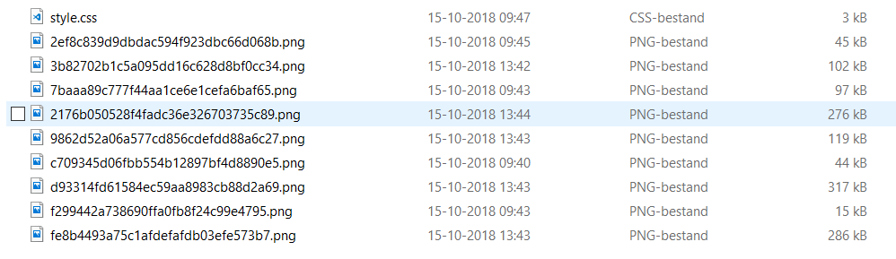
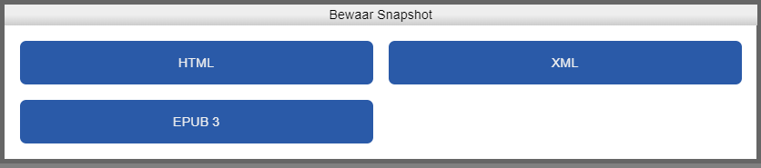
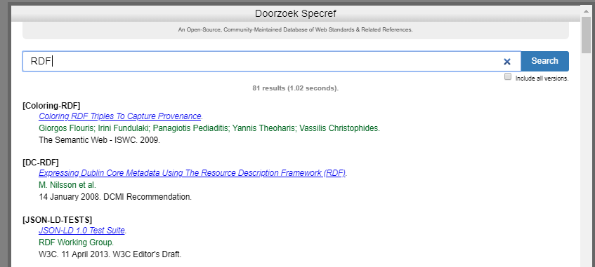
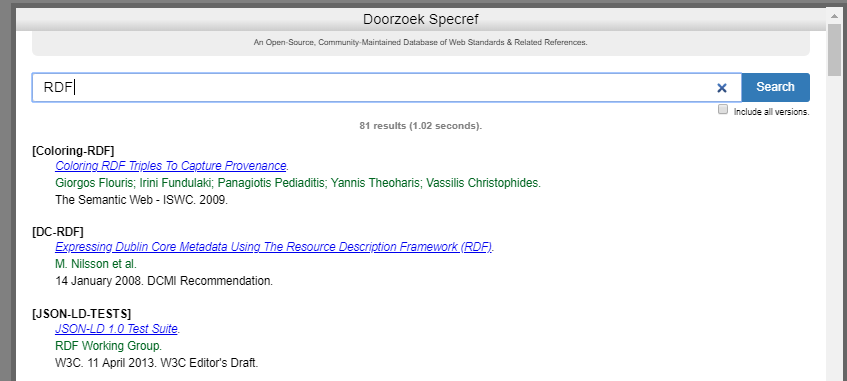
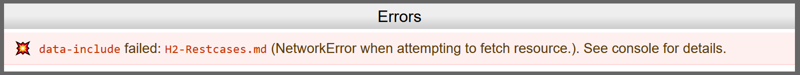
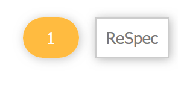
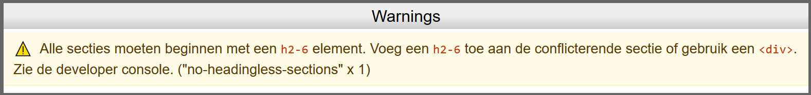

ReSpec
ReSpec is een tool van W3C die het schrijven van specifications makkelijker maakt. ReSpec zorgt voor een uniforme styling in het document, onderhoudt referenties en verwijzingen naar andere documentatie, verzorgt de inhoudsopgave, zorgt voor links naar vorige en meest recente versies, en heeft een integratie met Github issues.
Algemeen
Er is een gedetailleerde (Engelstalige) gebruikershandleiding beschikbaar[2] Zie: https://github.com/w3c/respec/wiki/ReSpec-Editor's-Guide
, en er is ook een ontwikkelaarshandleiding[3] Zie: https://github.com/w3c/respec/wiki/Developers-Guide
te vinden.
Geonovum heeft een fork van W3C ReSpec omdat wij sommige onderdelen gecustomised hebben. Deze eigen versie van ReSpec wordt beheerd door de technisch beheerders van ReSpec, en dat valt buiten dit document.
De Geonovum wiki over ReSpec kan naast dit hoofdstuk worden gebruikt: https://github.com/Geonovum/respec/wiki
Documentatie maken met ReSpec
De map indeling
Een document dat bij Geonovum met ReSpec wordt gemaakt heeft standaard de onderstaande mappenstructuur. Voor het aanmaken van een nieuw ReSpec Document staat een template klaar.
| Hoofdmap | Naam van de hoofdmap | ||
| media | Map met de vaste naam “media” | ||
| Style.css | File met vaste naam, bevat de styling van het document | ||
| *.png | Afbeeldingsbestanden | ||
| index.html | File met de vaste naam “Index.html” | ||
| config.js | File met de vaste naam “config.js” | ||
| *.md | Tekstbestanden (Markdown) die de content bevatten |
Hieronder een voorbeeld van zo’n mappenstructuur. De .workspace file is een file die is aangemaakt door de “Visual Studio Code” Editor, daarover later meer.

In de hoofdmap staan de submap “media en de files “index.html, “config.js en *.md (Markdown) files.
In de submap “media” staat o.a. het bestand “style.css”, en ook worden alle afbeeldingen uit het Markdown door de Markdown plugin voor word in de map media gezet.

De namen van de afbeeldingen in dit voorbeeld zijn geregenereerd door de Markdown plugin “Writage” (zie paragraaf 3.2) Het staat je vrij om die namen herkenbare namen te geven, zolang je deze namen dan ook maar in de verwijzingen worden gebruikt.
Het bestand “index.html”
Het bestand index.html zorgt ervoor dat het ReSpec document automatisch wordt geladen in de browser. Bij het laden wordt ook automatisch de geonovum-ReSpec-code geladen en uitgevoerd. Deze code zorgt ervoor dat het document zijn standaard layout krijgt.
Index.html heeft een standaard indeling. Hieronder de template zoals gebruikt voorbeeld:
<!DOCTYPE html>
<html lang="nl">
<head>
<meta content="text/html; charset=utf-8" http-equiv="content-type">
<meta name="viewport" content="width=device-width, initial-scale=1, shrink-to-fit=no">
<script src="https://cdn.jsdelivr.net/gh/digitalbazaar/respec-mermaid@1.0.1/dist/main.js" class="remove"></script>
<script src="https://tools.geostandaarden.nl/respec/config/geonovum-config.js" class="remove"></script>
<script src="js/config.js" class="remove"></script>
<script class="remove"> respecConfig = {...organisationConfig, ...respecConfig}</script>
<script>document.title = respecConfig.title</script>
<title>Default</title>
<link rel="shortcut icon" type="image/x-icon" href="https://tools.geostandaarden.nl/respec/style/logos/Geonovum.ico" />
<script src="https://gitdocumentatie.logius.nl/publicatie/respec/builds/respec-nlgov.js" class="remove" async></script>
</head>
<body>
<section id="abstract" data-include-format="markdown" data-include="abstract.md"></section>
<section id="sotd"></section><!-- Wordt automatisch gevuld -->
<!-- voeg hier je eigen hoofdstukken toe -->
<section data-include-format="markdown" data-include="ch01.md" class="informative"></section>
<section data-include-format="markdown" data-include="ch02.md"></section>
<section data-include-format="markdown" data-include="mermaid.md"></section>
<section id='conformance'></section>
<section id='tof'></section>
<section id="index"></section>
</body>
</html>
In de HTML-header wordt de js-ReSpec bibliotheek geladen. Het enige dat in de header mag worden aangepast is de title (tussen \<title> en \</title>. Andere aanpassingen die nodig zijn in de header mogen alleen worden gedaan in overleg met de ReSpec beheerders. Een overzicht van de ReSpec beheerders staat in Hoofdstuk 6
In de HTML-Body geldt “vrijheid in gebondenheid” De \<div> en/of \<section> regels mogen worden gekopieerd en toegevoegd. Wel belangrijk om de structuur over te nemen, dus als volgt:
\<div id='H00' data-format="Markdown" data-include="ToCoVo.md">\</div>
\<section id='H01' data-format="Markdown" data-include="H1-Inleiding.md">\<h2>Inleiding\</h2>\</section>
Een \<div> is een sectie plus bijbehorend document, dat niet in de inhoudsopgave terechtkomt. Deze gebruik je bijvoorbeeld voor een Toelichting, een Colofon of een Voorwoord.
Een \<section> komt wél in de inhoudsopgave terecht. Deze heeft daarom behalve de data-include van het document, ook (verplicht!) een \<h2> tag. De tekst tussen \<h2> en \</h2> komt in de inhoudsopgave te staan.
Het bestand “config.js”
In config.js wordt een stuurvariabele voor ReSpec gevuld. De waarden in deze variabele worden door ReSpec gebruikt om de layout te bepalen, en bevatten een aantal document-eigenschappen.
Hieronder een voorbeeld config.js.
let respecConfig = {
useLogo: true,
useLabel: true,
// title is verplicht! Neem hier de titel van het document op ----------------------
title: "[Neem titel op in config.js]",
//-- specStatus is verplicht! (activeer 1 van de volgende) --------------------------
specStatus: "wv", // Werkversie
//specStatus: "cv", // Consultatieversie
//specStatus: "vv", // Versie ter vaststelling
//specStatus: "def", // Vastgestelde versie
//specStatus: "basis", // Basis Document
//-- specType is verplicht bij alle andere dan BASIS ---------------------------------
//specType: "NO", // Norm
//specType: "ST", // Standaard
//specType: "IM", // Informatie Model
//specType: "PR", // Praktijkrichtlijn
specType: "HR", // HandReiking
//specType: "WA", // Werkafspraak
//specType: "BD", // Beheer Documentatie
//specType: "AL", // Algemeen document
//specType: "BP", // Best Practice
specType: "HR",
//-- pubDomain is verplicht! (komt in de URL) -------------------------------------
pubDomain: "dk",
//-- license: voor de geldende gebruiksvoorwaarden. Default is cc-by.
//licence: "cc-by-nd", // bronvermelding, geen afgeleide werken (default)
//licence: "cc0", // Public Domain Dedication
licence: "cc-by", // Attribution, met bronvermelding
//-- shortName is verplicht! (komt in de URL: kies logische afkorting)--------------
shortName: "NL-ReSpec-GN-template",
//-- publishDate is verplicht -------------------------------------------------------
//-- NB: in de werkversie uitzetten, want dan pakt Respec de pushdate ---------------
//publishDate: "2023-03-28",
//eventueel is het mogelijk een versienummer mee te geven, maar bij Geonovum werken we gewoonlijk alleen met datum als onderdeel van de permanente URI.
//publishVersion: "0.0.2",
//previousVersion: "0.0.1",
//-- Voor dit blok geldt: alleen als er eerdere versies zijn en altijd beiden aan/uit!
//previousPublishDate: "2014-05-01",
//previousMaturity: "CV",
//-- de namen van de Editor(s) / Redacteur(en)---------------------------------------
//-- vul in: per Editor: name:, company:, companyURL: -------------------------------
editors:
[
{
name: "voornaam achternaam",
company: "Geonovum",
companyURL: "https://www.geonovum.nl",
}
],
//-- de namen van de auteur(s) ------------------------------------------------------
//-- vul in: per auteur: name:, company:, companyURL: -------------------------------
authors:
[
{
name: "voornaam achternaam",
company: "Geonovum",
companyURL: "https://www.geonovum.nl",
}
],
//neem hier de URL van de github repository op waar het respec document in staat
github: "https://github.com/Geonovum/NL-ReSpec-GN-template",
// Create PDF and link to file in header (optional):
alternateFormats: [
{
label: "pdf",
uri: "template.pdf",
},
],
};
De file config.js is eigenlijk een stukje javascript (JSON) code, het bevat alle mogelijke waarden voor de verschillende versies die wij hanteren bij Geonovum. In de file zelf staat aangegeven welke waarden verplicht zijn, en uit welke waarden te kiezen is. In bovenstaand voorbeeld gaat het om een “Werkversie van een standaard”.
SpecStatus
De SpecStatus in de configuratie geeft de keuze uit 4 waarden, deze waarden zijn vastgesteld, en mogen niet zomaar uitgebreid of aangepast worden. Elke status hoort bij een formele fase van een ReSpec document. Zie ook de Geonovum ReSpec wiki[4] Zie https://github.com/Geonovum/respec/wiki
.
- GN-WV, Werkversie: Dit is de versie van het document waaraan wordt gewerkt. Deze versie is continu “under-construction”.
- GN-CV, Consultatieversie: Dit is een “snapshot” van de versie die “in consultatie” wordt gezet. Aan deze versie wordt niks meer gedaan totdat de consultatie is afgelopen. Daarna worden alle op en aanmerkingen uit de consultatieronde verwerkt.
- GN-VV, Vaststellingsversie: Dit is een “snapshot” van de versie na het verwerken van de op en aanmerkingen uit de consultatieronde is ontstaan. Deze versie wordt aangeboden aan de programma-raad van Geonovum, om te wordern “vastgesteld”.
- GN-DEF, Definitieve versie: Dit is de definitieve versie van het document, zoals vastgesteld door de programma-raad. Van deze versie wordt opnieuw een “snapshot” gemaakt in ReSpec. Het resultaat van die snapshot wordt op http://docs.geonovum.nl neergezet.
SpecType
Het SpecType in de configuratie is een vaste lijst met waarden, deze waarden zijn vastgesteld, en mogen niet zonder overleg met de Technische ReSpec beheerders uitgebreid of aangepast worden.
Onderstaande beschrijvingen komen uit het generiek beheerplan[5] Zie: https://www.geonovum.nl/uploads/documents/Geonovum%20GENERIEK%20Beheerplan%20geo-standaarden%20v1.1.pdf
.
- NO, Norm: Een norm is bij een officieel standaardisatie instituut ondergebracht en bevat bindende afspraken.
- Naast het gebruik van normen is NEN 3610 de enige norm waar Geonovum een inhoudelijke verantwoordelijkheid heeft. Het formele beheer en beslissingen worden genomen in de NEN normcommissie 351 240 waar Geonovum de voorzitter van is.
- ST, Standaard: Een document met (bindende) afspraken.
- IM, Informatiemodel: Een standaard waarbij door de term informatiemodel te hanteren wordt aangegeven dat het een abstractie (het model) vormt van de werkelijkheid zoals beschreven binnen een bepaalde sector/domein. Informatiemodellen zijn een semantische invulling van normen voor sectoren zoals ruimtelijke ordening, kabels en leidingen, water, etc..
- PR, Praktijkrichtlijn: Praktijkrichtlijnen zijn producten die informatie geven, vaak met een technisch karakter, die nodig is voor het toepassen van standaarden. Een praktijkrichtlijn hoort altijd bij een standaard/norm.
- HR, Handreiking: Op zichzelf staande documentatie dat als doel heeft een hulpmiddel te zijn, niet verplichtend maar ondersteunend.
- WA, Werkafspraak: Legt uit hoe wetgeving moet worden toegepast bij onduidelijkheden, discrepanties of fouten in de standaarden.
- BD, Beheerdocumentatie: Documentatie met betrekking tot het beheerproces van de standaard. Deze documentatie betreft niet een standaard of onderdeel daarvan, zoals een handreiking of werkafspraak.
- AL, Algemeen: Op zichzelf staande algemene documentatie over standaarden. De documentatie betreft niet een specifieke standaard of onderdeel daarvan, het is ook geen beheerdocumentatie van een specifieke standaard.
LocalBiblio
In de localBiblio variabele worden Referenties naar andere documenten gezet. Voordat je hier citaten toevoegt, loont het de moeite om eerst in de SpecRef van ReSpec zelf te kijken. Zie voor uitleg van Specref paragraaf 4.3.3. Pas als je een verwijzing niet vindt in SpecRef voeg je hem hier toe!
Het bestand “style.css”
TODO:FIXME
Het bestand style.css staat in de map media. De Geonovum Fork van ReSpec heeft een eigen styling. Met het bestand style.css kan je de default styling van Geonovum overschrijven en/of aanvullen. Om te voorkomen dat er een wildgroei aan stijlen, lettertypes en kleuren gaat ontstaan, moet die altijd in overleg met de ReSpec Beheerders (zie Hoofdstuk 5).
Content: bestanden “*.md”
De “echte” content wordt gemaakt in het formaat “Markdown”. Er is een aantal editors beschikbaar die dat formaat ondersteunen. Zie hiervoor Hoofdstuk 3. Het is handig om voor elk hoofdstuk een aparte Markdown file te maken, want dan blijven de bestanden beperkt in grootte, en zijn er gemakkelijker werkafspraken te maken over wie wanneer in welke file aan het editen is.
Content: Afbeeldingen “*.png”
Afbeeldingen worden als “png” bestand neergezet in de map “media”. In je Markdown document neem je gewoon een plaatje op zoals je in Word gewend bent. Writage en ReSpec zorgen ervoor dat de plaatjes worden getoond.
ReSpec Frontend
De knop “ReSpec”
De knop “ReSpec” rechtsboven in de frontend van ReSpec, bevat een aantal handige functies. Als je klikt op de knop, verschijnt het vervolgscherm met een viertal functies.
Elk van de functies wordt hieronder uitgelegd.

Bewaar snapshot

Doorzoek SpecRef
 

De gevonden zoekresultaten kunnen worden overgenomen in het ReSpec document.
Lijst van definities
Deze functie gebruiken wij vooralsnog niet.
Hogere ReSpec
Omdat wij ervoor hebben gekozen om documenten te schrijven in Markdown, gebruiken wij niet alle ReSpec functionaliteit. In dit hoofdstuk worden de speciale ReSpec functies beschreven die als HTML code in het Markdown document kunnen wordnen opgenomen, of die in de door respec gegenereerde HTML file kunnen worden neergezet. Het gebruik van deze functionaliteit vereist dus wel HTML voorkennis.
Afbeeldingen
Een lijst van afbeeldingen kan door ReSpec automatisch worden gegenereerd, maar dan moet er wel aan een aantal ReSpec specifieke voorwaarden worden voldaan:
In Index.html komt ergens te staan:
<figure id="flowchart">
<img src="flowchart.svg" alt="">
<figcaption>The water flows from bucket A to bucket B.</figcaption>
</figure>
In de documenten worden de afbeeldingen op de volgende manier neergezet:
<figure id="flowchart">
<img src="flowchart.svg" alt="">
<figcaption>The water flows from bucket A to bucket B.</figcaption>
</figure>
NB: \<figure> inclusief uniek ID en een ge-embedde \<figcaption> zijn verplicht!
Eventuele referenties naar plaatjes doe je op e volgende manier:
<p>The flowchart shown in <a href="#flowchart"></a> is quite impressive.</p>
</section>
Referentie naar GitHub issues
ReSpec ondersteunt ook een koppeling naar issues die zijn gemeld op GitHub. Jek kan referenties opnemen naar individuele issues. Ook is het mogelijk om een lijst met alle issues op te nemen in je document.
Om GitHub issues op te nemen moet je in “config.js” een referentie opnemen naar de GitHub repository.
<span style='color: #24292E;'github<span style='color: #D73A49;': <span style='color: #032F62;'"<span style='color: #032F62;'https://www.github.com/Geonovum/MIM-Werkomgeving/<span style='color: #032F62;'"<span style='color: #24292E;',
Een referentie naar een issue neem je als volgt op:
<div class="issue" data-number="363"></div>
Waarbij data-number het issuenummer is.
Een lijst met issues kan je toevoegen met de volgende HTML code:
<section class="appendix" id="issue-summary">
<!-- Issues will magically be listed here! -->
</section>
Foutmeldingen en waarschuwingen

In dit geval is er een tikfout gemaakt bij de naam van de Markdownfile die ge-include wordt. Het moet natuurlijk “H2-Testcases.md” zijn.

Een voorbeeld van een waarschuwing. Klikken hierop geeft je je de waarschuwing.
In het onderstaande voorbeeld meldt ReSpec dat er een \<h2> header ontbreekt in het Markdown document.
